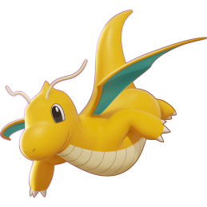

-
Pikachu
HP 300

Descrição
Os Pikachus são pequenos roedores de quarenta centímetros e de seis quilogramas,com um corpo redondo,pernas curtas e uma longa cauda, quando macho,a cauda tem um formato de um raio,mas se o Pikachu for fêmea sua cauda ganha um coração na ponta.
-
Charizard
HP 800
Descrição
Geralmente,um Charizard é competitivo.ele adora a batalha e seu espírito competitivo também é notável,uma vez que nunca vai cuspir fogo em um inimigo mais fraco a menos que provocado ou ordenado,quando fica muito irritado,as chamas em sua cauda se tornam branco-azuladas.
-
Mewtwo
HP 1200

Descrição
Mewtwo foi criado geneticamente em um laboratório,sendo um clone do misterioso antigo Pokémon Mew,é uma criatura com uma postura humanóide,mas tem algumas características felinas.
-
Scizor
HP 320
Descrição
Scizor é um Pokémon vermelho, metálico e parecido com uma formiga com padrões amarelos e pretos em suas pinças que se assemelham a um padrão de olhos. Seu corpo consiste em três partes principais: o tronco, o abdômen e a cabeça,ele fica em duas pernas e tem um par de pequenas asas localizadas nas costas que são usadas para controlar a temperatura do corpo,em vez de voar,o habitat de Scizor é exuberante e vasto,onde pode residir com o resto do enxame.
-
Bulbassauro
HP 180
Descrição
Bulbassauro é um pequeno Pokémon anfíbio quadrúpede de pele azul-esverdeada com manchas mais escuras. Tem olhos vermelhos com pupilas brancas, orelhas pontiagudas no topo de sua cabeça e um focinho curto e rombudo acima de sua larga boca. Possui em cada uma de suas pernas grossas três garras afiadas,nas costas de Bulbassauro há um grande bulbo de planta verde,que é cultivado a partir de uma semente plantada em seu nascimento,o bulbo também esconde duas videiras semelhantes a tentáculos.
-
Venussauro
HP 220
Descrição
Há uma grande flor na parte traseira do Venussauro,a flor é dita para ter em cores vivas se ele fica cheia de nutrição e luz solar o aroma da flor acalma as emoções das pessoas.
-
Tyranitar
HP 380
Descrição
Tyranitar é tão esmagadoramente poderoso que pode derrubar uma montanha inteira para fazer seu ninho,este Pokémon vagueia pelas montanhas em busca de novos oponentes para lutar,se encontrar um oponente que não seja digno,Tyranitar o ignora e segue em frente.
-
Dragonite
HP 300
Descrição
Dragonite é capaz de dar a volta ao mundo em apenas 16 horas,é um Pokémon de bom coração que leva navios perdidos e afundando em uma tempestade para a segurança da terra,já se ouviu dizer que este Pokémon salvou um náufrago,levando-o para uma ilha remota,um paraíso ocupado exclusivamente por Dragonite.
-
Espeon
HP 250
Descrição
A espeon é extremamente leal a qualquer formador que considere digno,diz-se que este pokémon desenvolveu seus poderes precognitivos para proteger seu treinador de danos,sua pele tem a aparência de veludo e o orbe em sua testa brilha quando usa psico-poder.